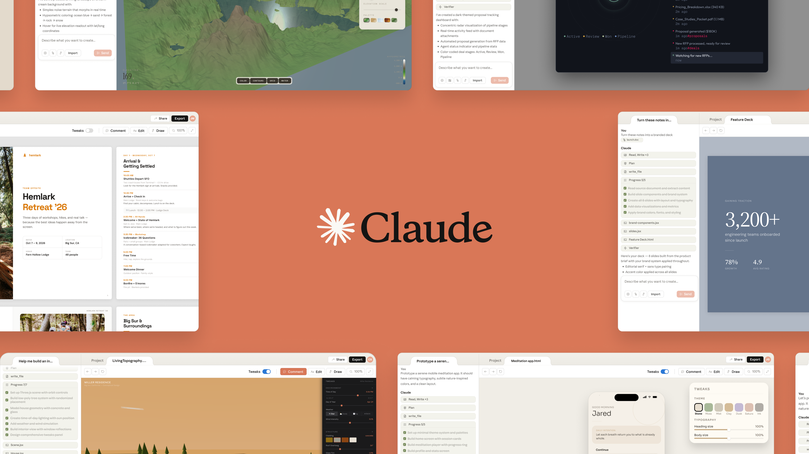
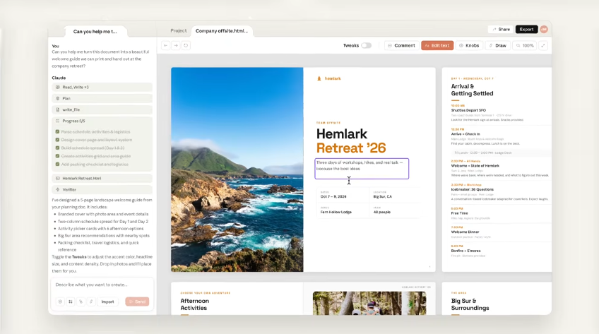
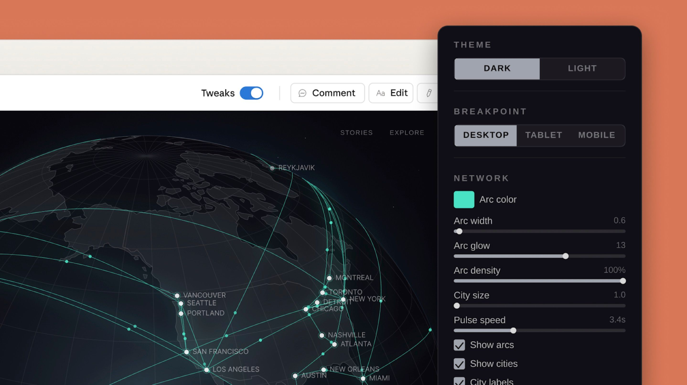

ê°Å¸â¸ Capturas reais ê¢â¬â coletadas de fontes pêºblicas
17 screenshots autêªnticos da UI do claude.ai/design integrados nos mê³dulos. Acima, trêªs das principais composiê§êµes ê¢â¬â galeria completa nos mê³dulos abaixo.



ê¢Åâ Cobertura: 9 telas reais isoladas (workflow completo) no mê³dulo 4.1 ê· 4 mockups gerados nos mê³dulos 4.2-4.4 ê· 3 composiê§êµes marketing acima ê· MANIFEST detalhado em curso/trilha4/img/MANIFEST.md
ê°Å¸âÂ¥ê¯Â¸Â Tour visual pelas telas oficiais
Cada tela da ferramenta com captura: chat, canvas, Tweaks, modos, export.
Tela inicial apê³s login em claude.ai/design. Lista de projetos com thumbnails, botê£o "New".
Organizaê§ê£o correta desde o inêÂcio (um projeto por cliente/entrega) facilita 10x depois.
Grid thumb ê· New button ê· Cliente-tipo ê· Search.
Conversa persistente. Mensagens coloridas por role (user cinza, Claude destaque).
Reler histê³rico ajuda a lembrar decisêµes jê¡ tomadas na sessê£o.
Persistêªncia ê· Roles ê· Tool calls visêÂveis.
êÂrea direita maior. Iframe com HTML gerado. Interaê§ê£o real (scroll, clique, animaê§ê£o).
êâ° design clicê¡vel, nê£o imagem ê¢â¬â teste como usuê¡rio final.
Live iframe ê· Interaê§ê£o real ê· Responsive test.
Card flutuante canto inferior direito. Controles: sliders, pickers, toggles.
Toggle on/off via toolbar. Desligado = design "limpo".
Overlay ê· Discreto ê· Toggle ê· Live update.
Fixa no topo do canvas. Tweaks, Comments, Draw, Zoom, Present.
Troca de modo ê© 1 clique. Memorizar êÂcones acelera.
5 modos ê· êÂcones ê· Keyboard shortcuts ê· Ativo destacado.
Dropdown com formatos: PDF, PPTX, HTML, Canva, Claude Code. Share separado para URL interna.
Export correto = zero retrabalho.
Multi-format ê· Share URL ê· Copy link ê· Permissions.
ê°Å¸Å½Â¨ Galeria: Landing pages
12 exemplos reais com print + prompt original + Tweaks usados.
Landing de produto dev, estê©tica Editorial Minimalism. Hero com uma linha, 3 features, social proof em logos.
Padrê£o mais replicê¡vel em 2026 ê¢â¬â funciona para 80% dos SaaS B2B.
Editorial ê· Logo marquee ê· CLI preview ê· Sign-up friction-low.
Marca artesanal. Hero com imagem hero, copy sensorial, grade de produtos, FAQ mêÂnimo.
Prova que Claude Design NêÆO ê© sê³ "tech". Funciona pra nichos humanizados.
Warm palette ê· Serif italic (com DS) ê· Produto hero ê· Micro-interaê§ê£o.
Landing de curso: hero com bullet pain-point, preview de mê³dulos, quem ê© vocêª, garantia, 2 CTAs.
Template de conversê£o vale milhêµes em e-commerce educacional.
Pain point ê· Module preview ê· Guarantee ê· Urgêªncia.
Dark mode. Tipografia oversized. Data/cidade destaque. Speakers grid. Countdown.
Familia estê©tica cARCKHêtogrê¡fica funciona muito bem em evento.
Oversized ê· Countdown Tweak ê· Speakers ê· Dark primary.
Foto, bio curta, grid de projetos, case study expandêÂvel. Contato visêÂvel.
Use case de designers/devs que querem portfolio "nê£o Framer template".
Bio ê· Projetos ê· Case studies ê· Contato.
Os outros 7 exemplos: consumer SaaS, agêªncia criativa, crypto wallet, SaaS vertical saêºde, landing de AI startup, landing de community, landing de podcast.
Cada um mostra um padrê£o diferente ê¢â¬â estê©tica, estrutura, Tweak.
7 padrêµes ê· Estê©tica por vertical ê· Tweaks relevantes.
ê°Å¸âÅ Galeria: Pitch decks
10 decks reais. Pitch seed, series A, all-hands, technical deep-dive, investor update.
Estrutura: Title, Problem, Solution, Market, Product, Biz Model, Traction, Team, Ask, Vision.
Modelo validado por centenas de seed rounds. Claude segue automaticamente se pedir.
10 slides canê´nicos ê· 1 ideia por slide ê· Visual forte.
Growth numbers, cohort analysis, unit economics, roadmap, team scale plan.
Charts integrados (recharts via CDN) tornam nêºmeros palpê¡veis.
Charts ê· Cohort ê· Unit economics ê· Milestones.
Retrospectiva + next quarter. Speaker notes explêÂcitos. Tom casual.
Use case mais frequente de decks corporativos.
Speaker notes ê· Tom interno ê· Reviews ê· Goals.
Diagramas de arquitetura, code snippets, before/after de otimizaê§ê£o, learnings.
Claude desenha arquiteturas com SVG inline ê¢â¬â mais elegante que boxes e setas manuais.
Arch diagram ê· Code snippet ê· Before/after ê· Learnings.
Mê©tricas do mêªs, highlights, lowlights, asks, prê³ximos meses.
Template mensal economiza ~3h toda vez.
Metrics ê· Highlights ê· Lowlights ê· Asks ê· Next.
Outros 5 padrêµes: PDF longo virando deck, workshop com exercêÂcios, roadmap anual, keynote conference, RFP response.
Cobre >90% dos decks corporativos.
PDFê¢â âdeck ê· Workshop ê· Roadmap ê· Keynote ê· RFP.
ê°Å¸â± Galeria: Protê³tipos mobile
8 protê³tipos: onboarding, checkout, dashboard, empty states, settings, flow social, food delivery, banking.
Splash, intro carousel (3 telas), permission, welcome. Tudo clicê¡vel, transiê§êµes CSS.
Base de qualquer app. Reutilize o padrê£o.
Carousel ê· Permission ê· Welcome ê· Skip button.
Cart, shipping, payment method (Apple Pay destaque + card), review, success.
Conversê£o mobile ê© crêÂtica. Protê³tipo ajuda a validar.
Apple Pay ê· Address ê· Review ê· Success animation.
Balance card, quick actions, recent transactions, spending chart, insights.
Prova que Claude pode data-dense em mobile sem crunch.
Balance hero ê· Quick actions ê· Transactions ê· Insights.
First empty (onboard), list empty (search), error empty. Cada um com CTA claro e ilustraê§ê£o.
Empty state bem-feito reduz churn inicial em 30%.
First use ê· List empty ê· Error ê· CTA + ilustraê§ê£o.
Feed infinito (mock), botê£o de curtir com animaê§ê£o, compose post, profile com stats.
Social ê© um dos padrêµes mais pedidos por founders.
Feed ê· Compose ê· Profile ê· Micro-interaê§ê£o.
3 protê³tipos adicionais: food delivery completo, banking tradicional, settings com tabs profundas.
Cada um com pattern êºnico que vale colecionar.
Delivery flow ê· Banking ê· Deep settings.
ê°Å¸Â¢ Case Canva: a integraê§ê£o oficial
Melanie Perkins, parceria oficial, export editê¡vel, o fluxo complementar.
CEO Canva + Mike Krieger apoiaram publicamente no anêºncio. Integraê§ê£o de export confirmada.
Quando Canva oficialmente endorse algo, mercado escuta.
Endorsement ê· Partnership ê· Market signal.
Assets chegam ao Canva como objetos editê¡veis: texto, cor, layout ê¢â¬â nê£o imagem achatada.
Outras ferramentas exportam flatten. Editabilidade ê© diferencial enorme.
Editable ê· Not flatten ê· Technical advantage.
Claude Design para criaê§ê£o rê¡pida do zero ê¢â â Canva para ediê§ê£o colaborativa e polimento.
Posicionamento oficial evita competiê§ê£o direta. Use os dois juntos.
Criaê§ê£o rê¡pida ê· Ediê§ê£o colaborativa ê· Stack nê£o conflitante.
Agêªncia gera 20 variantes de campanha em Claude Design ê¢â â envia para time de marketing polir no Canva.
Fluxo 10x mais rê¡pido que design manual.
Batch creation ê· Handoff ê· Final polish.
Apesar do discurso "complementar", mercado leu como ameaê§a a Figma. Aê§êµes caêÂram imediatamente.
Sinaliza que Anthropic+Canva juntos sê£o vistos como sê©rio risco a player dominante.
Market reaction ê· Figma vulnerable ê· Moat shift.
Especulaê§ê£o fundamentada: integraê§ê£o reversa (Canva chama Claude Design como "AI designer" embedded).
Se acontecer, muda ambiente para 100M+ usuê¡rios Canva.
Embedded AI ê· 100M reach ê· Distribution.
ê°Å¸âÅ¡ Case Brilliant: 20 prompts ê¢â â 2
Reduê§ê£o 90% no esforê§o de iteraê§ê£o. Como Brilliant usa Claude Design.
Pê¡ginas complexas que exigiam 20+ prompts em outras ferramentas agora saem em 2 prompts no Claude Design.
Reduê§ê£o ~90% no esforê§o de iteraê§ê£o.
Mê©trica validada ê· 90% reduction ê· Iteration saving.
Plataforma de educaê§ê£o interativa em matemê¡tica, ciêªncia e CS. Conteêºdo visual-first.
O perfil "visual-first" ê© exatamente onde Claude Design brilha.
Edtech ê· Visual-first ê· Interactive lessons.
Contexto acumulado + design system extraction elimina rondas repetitivas de refinamento.
Revela que o ROI vem principalmente de DESIGN.md + context stacking.
DS extraction ê· Context acumulado ê· Zero re-trabalho.
Lesson interativa com 15+ elementos (texto, visualizaê§ê£o, quiz, feedback), marca consistente, responsive.
Essa complexidade ê© onde ferramentas tradicionais falham ê¢â¬â Claude Design acerta.
Multi-elemento ê· Marca consistente ê· Responsive.
Invista MUITO no DESIGN.md inicial. Rode web capture do produto atual. Cada prompt seguinte alavanca esse setup.
Vocêª pode replicar o 20ê¢â â2 ratio no seu contexto.
Setup investment ê· ROI alavancado ê· Replicê¡vel.
Setup 1 vez: DESIGN.md + repo + 3 pê¡ginas reais. Gaste 1h nisso. Depois: 2 prompts por nova pê¡gina.
ROI direto = aplicar a liê§ê£o.
1h setup ê· N pê¡ginas rê¡pidas ê· Escala.
ê°Å¸Å½Â¯ Case Datadog: ciclo 1 semana ê¢â â 1 conversa
Como Datadog comprimiu processo de design-feedback-review numa êºnica sessê£o.
Ciclo têÂpico de brief ê¢â â mockup ê¢â â feedback ê¢â â revisê£o ê¢â â entrega comprimido em uma êºnica conversa live.
Ritmo semanal vira ritmo de minutos.
Temporal compression ê· Live design ê· Async ê¢â â sync.
Plataforma SaaS enterprise de observabilidade cloud. Dashboards complexos, data-dense, alertas.
Data-dense ê© extremamente difêÂcil ê¢â¬â esse caso valida que Claude Design lida com isso.
Enterprise ê· Data-dense ê· Dashboard-heavy.
Designer + PM + eng na mesma sessê£o. Mudanê§a discutida ê¢â â implementada ao vivo.
Elimina handoff-feedback-revisê£o async.
Sync collab ê· Live change ê· No async loops.
Antes: brief ê¢â â designer (2d) ê¢â â review (1d) ê¢â â revisê£o (1d) ê¢â â handoff dev (1d) = 5d. Novo: 1 call de 1h.
Comparaê§ê£o brutal. Nêºmero de decisêµes por hora sobe dramaticamente.
5d ê¢â â 1h ê· Decision density ê· Real-time.
No fim da call, "Export ê¢â â Claude Code" empacota specs, componentes, CSS vars. Eng pega direto.
Elimina interpretaê§ê£o entre design ê¢â â dev. O HTML jê¡ ê© real.
Bundle export ê· Zero handoff ê· Real HTML.
1 call (1h). Todos vejam o canvas. Designer opera, PM/eng comentam. Decisêµes ao vivo.
Novo ritual que substitui design reviews async.
Sync ritual ê· 1h cap ê· All stakeholders.